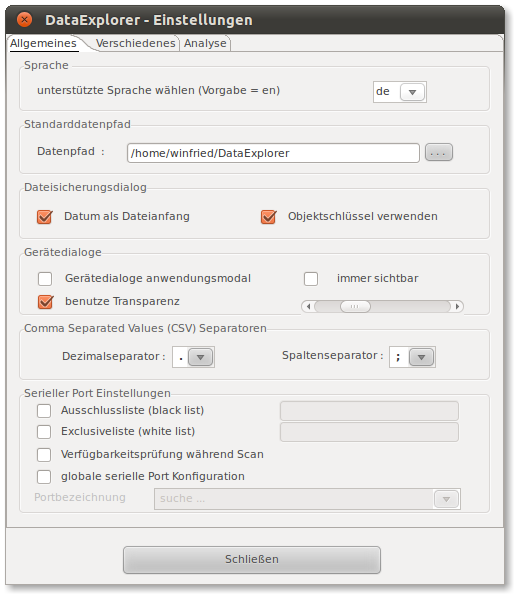
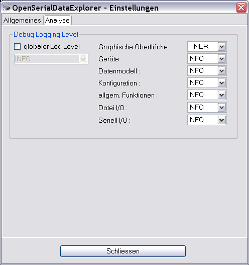

Der Einstellungsdialog
Der Einstellungsdialog dient zum Einstellen:
- Des Datenpfades, das Verzeichnis unter dem die
gerätespezifischen Logdatendateien abgelegt werden sollen, hier
sucht das Programm entsprechend dem eingestellten Gerät die
Datendateien.
- Der Dateisicherungsdialog kann als Anfangsdateiname das
aktuelle Datum und einen Objektschlüssle vorschlagen.
- Des Dezimalseparator- und Listenseparator-Zeichens, anders als
durch die Systemlokalen vorgegeben kann man hier Einstellungen
vornehmen um mit eventuell verwendeten Tabellenkalkulationsprogrammen
eine Zusammenarbeiten herzustellen. Diese Einstellung wirkt sich auch
auf den Export, bzw. Import von CSV Dateien aus.
- Verhalten der Gerätedialoge, ein programmmodales
Verhalten ist manchmal unpraktisch, wenn man parallel zu einer
Datensammelaktion Einstellungen vornehmen möchte, hat aber auch
zeitweise Nachteile und ist schwieriger zu programmieren.
- Der Dialog sucht beim Öffnen automatisch nach
verfügbaren seriellen Anschlüssen und blendet das Ergebnis
möglicherweise etwas zeitverzögert ein. Diese
Zeitverzögerung kann man auf langsamen Windows basierten Systemen
reduzieren, in dem man die Verfügbarkeitsabfrage abschaltet. Dann
werden belegte Ports halt auch angezeigt und können eventuell
später nicht benutzt werden. Der serielle Port kann dafür
aber für das Gerät gesichert werden. Auf UNIX basierten
Systemen spielt das, zeitlich gesehen, keinen Rolle. Diese Einstellung
wirkt sich auch auf den Geräteauswahldialog aus, der seinerseits
auch nach verfügbaren serielle Ports sucht.
- Wenn es System weit nur einen seriellen Anschluss (Port) gibt,
kann man hier die globale Einstellung vornehmen, meist sucht sich das
Programm aber selbst den seriellen Port zur Gerätekommunikation.
Der Dialog sucht beim Öffnen nach seriellen Anschlüssen und
blendet das Ergebnis möglicherweise etwas zeitverzögert ein.
Diese Einstellung wirkt sich auch auf den Geräteauswahldialog aus,
der dann die Portauswahl sperrt.

Über den Analyse Tabulator erreicht man Einstellmöglichkeiten für
eine Fehleranalyse. Nach einem Programmabsturz sollte in einer trace.log
Datei eine mögliche Erklärung zu finden sein. Achtung, alle
Verstellungen der Loglevel haben einen Einfluss auf die Laufzeit und das
kann zu nicht absehbaren Nebeneffekten führen. Alle Einstellungen
sollten mit diesem Wissen vorgenommen werden. Die Werte sind
entsprechend der Informationsfülle gestaffelt,
- SEVERE schreibt nur Programmfehler,
- WARNING schreibt Fehler und Warnungen,
- INFO schreibt Fehler, Warnungen und Informationen (ist die
Normaleinstellung)
- FINE schreibt Fehler, Warnungen, Informationen und Logs des
Levels FINE
- FINER schreibt noch mehr als FINE
- FINEST schreibt noch mehr als FINER
Ohne besonderen Grund sollte man nicht unbedingt über den
Level FINE einstellen.
- die globale Einstellung des "trace log" Levels, im
Normalfall ist das INFO
- Graphische Oberfläche, hiermit sind alle Programmteile
eingeschlossen, die mit den Hauptfenstern des Programms zu tun haben
- Geräte, hiermit sind alle Programmteile gemeint, die
über den Gerätedialog angesprochen werden
- Datenmodell, beschreibt den Anteil den Programmcodes, der mit
der internen Datenstruktur zu tun hat
- Allgemeine Funktionen sind die Programmteile die überall
verwendet werden können, also Hilfsfunktionen um Kurven zu
zeichnen, wie die Berechnung einer Checksumme oder die
Skalierungsteilung von Skalen
- für die serielle Schnittstelle, über dem Level INFO,
wird ein Memorylogger verwendet, der den geringsten Laufzeiteinfluss
hat. Logischerweise steigt dadurch der Speicherverbrauch der Anwendung.
Im Bedarfsfall kann das Programm dann etwa mit "java -jar -Xmx512m
OpenSerialDataExplorer.jar" gestartet werden, wobei der maximale
Speicherverbrauch der Java Virtual Machine auf 512 Megabyte begrenzt
ist.

Der Klassenbasierte Loglevel erlaubt den logging level auf ausgewählte Klassen zu reduzieren.
Hierdurch wir die Ausgabe übersichtlicher und erlaubt die Analyse weiter einzuschränken.
Die Selektion des Loglevels wir über ein Kontextmenü erreicht.
Erst durch schliessen des Dialogs wird die Einstellung wirksam.
In jedem Fall werden immer nur drei Tracelogdateien mit einigen
Megabyte Größe geschrieben. Die Dateien überschreiben
sich dann immer wieder selbst.
Hinweis: Im Fehlerfall immer mal wieder einen Blick in das
Logs Verzeichnis werfen, hier können wertvolle Hinweise zu für
die Fehleranalyse zu finden sein.
<<== zurück
weiter ==>>